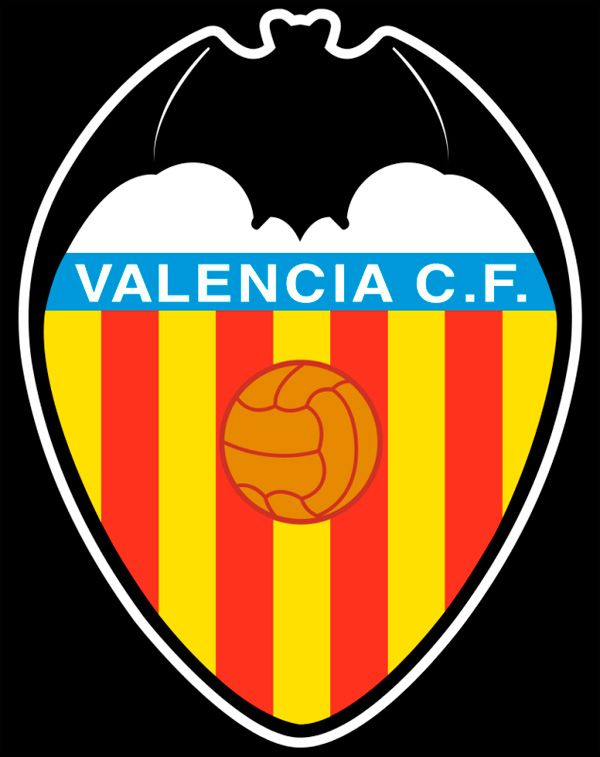

Ahora mismo se encuentra en la pagina principla del club. Para visitar la pagina de la plantilla, comprar una entrada o intentar contactar con el club pinche en las palabras de arriba.
En la página de plantilla podras ver a los jugadores que componen el Valencia Club de Futbol y sus posiciones.
En la página de taquillas podras pedir tus entradas para el proximo partido.
Si existe algun error o duda sobre la página o sobre el club puedes utilizar la página de contacta.
Si desea poner una queja sobre "Peter Lim" sepa que ya hay bastantes. También hay quejas de que el Levante va por delante en la liga.
